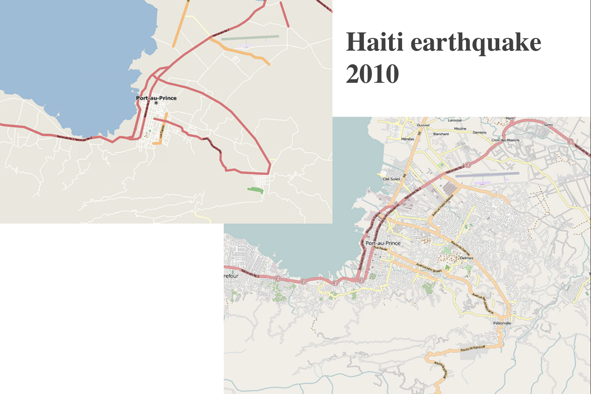

Mapbox Workshop
Geo4Dev
Hi, we're
Hannah, Marena, and Colleen
from
Mapbox
Follow along
http://bit.ly/2eKiF0x
This workshop will cover:
The Mapbox platform
Mapbox use cases
OpenStreetMap
Exercise: Visualize data on a map with Mapbox Studio
Mapbox wants to change the way people
navigate cities
and
understand
our planet.
We do this by providing
building blocks
for integrating brand and location into any
mobile
or
online
app.
Geocoding API:
transforms customer requested delivery addresses into a latitude, longitude point.
Turf.js:
pairs request with an available courier and sends an instant notification.
Directions API:
generates a route for courier's accepted delivery request.
Beautiful vector maps:
mix of performance, science, and design that
renders data
in real-time.
Mapbox makes APIs that specify how
geospatial and navigational
app components interact with each other.
Store and maintain geographic datasets
(Dataset Editor)
Design custom GL map styles
(Styles Editor)
Mapbox Studio leverages:
Styles API
- read and write map styles, fonts, and icons
Uploads API
- transforms geo data sources and files into performant production-ready tilesets
Datasets API
- offers persistent storage for custom geo data and allows add and edit features
Maps API
- serves our raster and vector tiles (aka final maps you see)
Static API
- returns static maps and raster tiles from styles
Tileset API
- stores metadata for raster and vector tilesets
The structure of a
Mapbox map
3: GL JS/ GL Native (the client)
2: Vector Tiles
1: style.json
Three parts
Drilling (all the way) down demo
Tile Query API
- retrieve data about specific features at a specified location within a vector tileset
Mapbox GL JS
- a JavaScript library that uses WebGL to render interactive maps from vector tiles and Mapbox styles
Catholic Charities USA Disaster Operations Map
Mapbox GL JS
- a JavaScript library that uses WebGL to render interactive maps from vector tiles and Mapbox styles
Client-side data joins
- a JavaScript library that uses WebGL to render interactive maps from vector tiles and Mapbox styles
D3.js
- build a simple data query and join it with the map geometry
Street trees in Manhattan
GL Draw
- a plugin for drawing using GL JS
Mapbox GL JS
- a JavaScript library that uses WebGL to render interactive maps from vector tiles and Mapbox styles
Explore NYC attractions
Turf.js
- open-source JavaScript library that implements common geospatial operations
Mapbox GL JS
- a JavaScript library that uses WebGL to render interactive maps from vector tiles and Mapbox styles
3D Population
Client-side data joins
- a JavaScript library that uses WebGL to render interactive maps from vector tiles and Mapbox styles
Mapbox GL JS
- a JavaScript library that uses WebGL to render interactive maps from vector tiles and Mapbox styles
Isochrones demo
Open-source library
- use the Matrix API to generate isochrones
Mapbox GL JS
- a JavaScript library that uses WebGL to render interactive maps from vector tiles and Mapbox styles
OpenStreetMap
OpenStreetMap is an initiative to create and provide free geographic data to anyone
www.openstreetmap.org
Over 4.1 million users and
over 5 billion uploaded GPS points
Mapbox and OSM
Humanitarian OpenStreetMap Team uses OSM data to help
emergency response efforts around the world
hotosm.org
Missing Maps adds the most
vulnerable places in the
developing world to OSM
to aid crisis response.
missingmaps.org

Workshop!
Here's what you'll be making today.
Here's what you'll need to get started:
Sign up for a
Mapbox Studio account
Download
GeoJSON data
View
Mapbox GL JS examples
Start a new
JS Bin project
thank you.
happy mapping!
Hannah, Marena, and Colleen
from
Mapbox